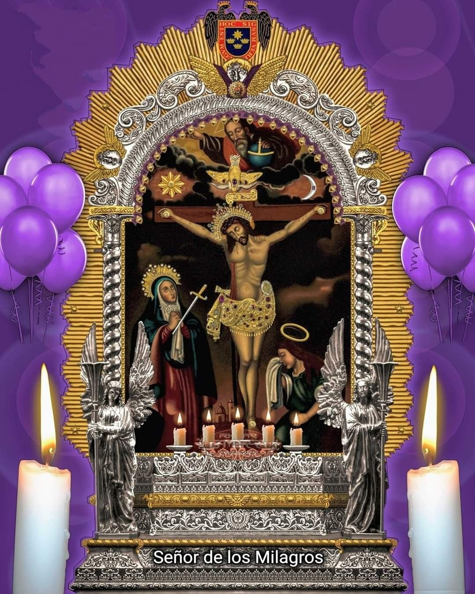

Velada en Honor al Señor de los Milagros
Fe · Devoción · Tradición

Homenaje y Oración Familiar
Familia Ygarza García
Fe · Devoción · Tradición

Fe · Devoción · Tradición
Con profunda fe y devoción, tenemos el honor de invitarle a compartir con nosotros esta velada en homenaje a nuestro Señor de los Milagros.
Su presencia será una bendición que engrandecerá esta celebración. Le esperamos con gratitud y cariño.